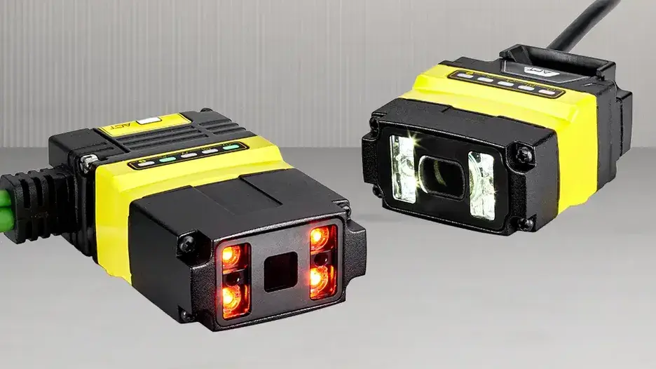

초소형 설치 구조
기구 여유가 적은 장비 내부와 좁은 판독 위치에 배치하기 쉽습니다.
Compact Fixed Barcode Reader
설비 내부 공간이 좁고 설치 유연성이 중요한 공정을 위한 초소형 고정식 산업용 바코드 리더기입니다.

01 · Overview
DataMan 80은 장비 내부에 판독기를 넣어야 하지만 카메라, 케이블과 조명 공간이 제한된 경우에 검토하는 소형 리더기입니다. 소형 본체만 보고 선정하기보다 코드까지의 거리, 렌즈 방향, 커넥터와 브래킷 공간을 실제 설비 도면에 맞춰 확인해야 합니다.
전자 조립기, 소형 포장기, 검사 지그, 부품 공급 장치처럼 제한된 공간 안에서 코드 판독을 자동화하는 장비에 적합합니다.
02 · Key Features
기구 여유가 적은 장비 내부와 좁은 판독 위치에 배치하기 쉽습니다.
기존 제어반과 장비 구조에 맞춰 전원과 데이터 통신 구성을 선택합니다.
작업자 스캔 없이 부품 투입과 공정 진행에 맞춰 코드를 읽습니다.
03 · Application Fit
일반 크기 리더기의 본체와 케이블을 배치하기 어려운 곳입니다.
작업자가 부품을 고정 위치에 놓을 때 자동으로 코드를 확인하는 공정입니다.
작은 라벨 또는 포장 코드를 설비 시퀀스와 연결하는 장비입니다.
04 · Specification Guide
제품 선정에 앞서 아래 항목을 기준으로 검사 조건과 옵션을 확인합니다.
초소형 고정식 산업용 바코드 리더기
협소 공간의 1D·2D 코드 자동 판독
본체·커넥터 공간, WD, 코드 크기, 조명, 통신 방식
적용 모델 및 옵션에 따라 상이합니다. 해상도, 렌즈, 조명, 통신과 세부 사양은 검사 대상 및 설치 조건을 확인한 뒤 문의 바랍니다.
05 · Inspection Tasks
06 · ASPEC Engineering
단품 공급만이 아니라 실제 생산라인에서 안정적으로 작동하도록 광학계, 제어와 소프트웨어를 함께 구성합니다.
07 · References & Related Products
ASPEC의 AI·OCR·바코드·정렬 검사 사례에서 검사 방식과 시스템 구성 방향을 확인할 수 있습니다. 공개 사례는 특정 제품 모델 사용을 의미하지 않으며 실제 모델은 현장 조건에 따라 선정합니다. 구축사례 라이브러리 보기
08 · FAQ
렌즈 방향, 커넥터와 케이블 굽힘 반경, 조명과 브래킷까지 포함한 전체 공간을 확인해야 합니다. 장비 단면도와 WD가 중요합니다.
코드 표면과 설치 거리, 주변광에 따라 다릅니다. 내장 조명만으로 대비가 부족하거나 반사가 심하면 별도 조명을 검토합니다.
브래킷, 전원, 통신과 트리거 신호가 맞는지 확인해야 합니다. 설치 치수와 배선을 검토한 후 교체 가능 여부를 판단합니다.
09 · Project Inquiry
검사 대상, FOV, WD, 택타임, 불량 유형을 알려주시면 카메라·렌즈·조명과 시스템 구성을 함께 검토해드립니다.